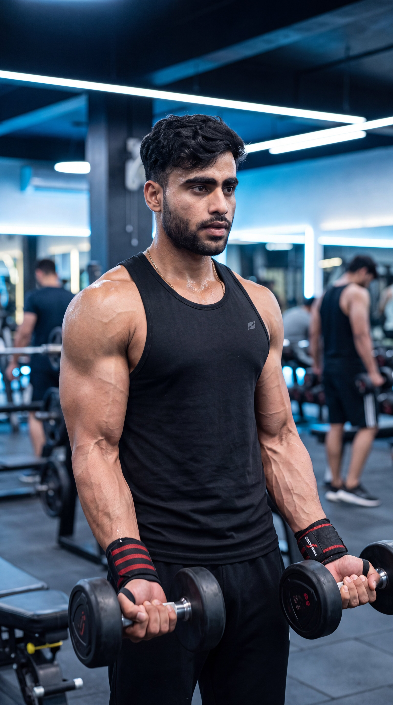

Primary Muscle
Biceps Brachii
Build Stronger Biceps, Thicker Forearms & Complete Arm Development
The Zottman Curl is a highly effective arm isolation exercise that combines a traditional dumbbell curl with a reverse curl during the lowering phase. This unique movement targets the biceps during the lift while heavily engaging the brachialis, brachioradialis, and forearm muscles as you lower the weight with a pronated grip. By training both elbow flexors and forearm muscles in a single exercise, the Zottman Curl improves grip strength, builds thicker forearms, and develops stronger, more balanced, and well-defined arms.

Biceps Brachii
Dumbbells
Intermediate
Isolation
Discover which muscles are primarily responsible for the Zottman Curl and which supporting muscles assist during elbow flexion, forearm rotation, grip strength, and controlled lowering. The combination of a supinated curl and pronated eccentric phase makes this exercise one of the most effective movements for building stronger biceps, thicker forearms, and complete arm development.
Front Upper Arms
Upper Arm Flexor
Forearm
Grip & Wrist Muscles
Discover how the Zottman Curl strengthens both the biceps and forearms, improves grip strength, enhances forearm development, increases arm functionality, and builds stronger, more balanced arms through its unique combination of supinated and pronated movements.
The lifting phase targets the biceps while the lowering phase emphasizes the forearms, allowing you to strengthen multiple arm muscles in a single exercise.
Rotating the wrists and controlling the pronated lowering phase strengthens the grip muscles, helping improve performance in many other pulling and lifting exercises.
The reverse-grip eccentric phase places greater emphasis on the brachioradialis and forearm muscles, promoting thicker and stronger lower arms.
The controlled wrist rotation develops better coordination, stability, and functional arm strength while reducing reliance on momentum.
By targeting the biceps, brachialis, brachioradialis, and forearms together, the Zottman Curl promotes balanced muscular development throughout the entire arm.
Combining traditional curls with reverse curls improves arm strength, muscular endurance, and real-world lifting performance, making the Zottman Curl one of the most complete arm exercises.
Follow these step-by-step instructions to perform the Zottman Curl with proper form, controlled wrist rotation, and maximum muscle activation. Correct technique strengthens the biceps, forearms, and grip while improving overall arm development.
Stand upright holding a dumbbell in each hand with your palms facing forward. Keep your feet shoulder-width apart, chest up, shoulders back, and elbows close to your sides.
Brace your core and avoid leaning backward before starting the curl.
Curl both dumbbells toward your shoulders while keeping your palms facing upward. Keep your elbows fixed beside your torso and avoid using body momentum.
Focus on lifting with your biceps instead of swinging the weights.
At the top of the movement, rotate your wrists until your palms face downward. Perform the rotation smoothly while keeping your elbows in the same position.
Rotate only your wrists—not your shoulders or elbows.
Lower the dumbbells under control with your palms facing downward. This reverse-grip eccentric phase places greater emphasis on the forearms and brachioradialis.
Resist gravity and lower the weights slowly instead of letting them drop.
Once the dumbbells reach the starting position, rotate your wrists back to a palms-up grip before beginning the next repetition. Maintain smooth, controlled movement throughout the exercise.
Perform every repetition with control to maximize biceps, forearm, and grip strength development.
Avoid these common technique mistakes to maximize biceps and forearm activation, improve grip strength, maintain proper wrist rotation, and perform the Zottman Curl safely and effectively for complete arm development.
Turning your wrists before reaching the top of the curl reduces biceps activation and disrupts the natural movement pattern of the exercise.
Complete the curl first, then rotate your wrists smoothly only at the top of the movement.
Swinging your torso or leaning backward shifts the workload away from the arms and reduces the effectiveness of both the curl and reverse curl phases.
Stand tall, brace your core, and choose a lighter weight that allows strict, controlled repetitions.
Letting gravity control the lowering phase reduces forearm activation and decreases time under tension, limiting strength and muscle development.
Lower the dumbbells slowly with your palms facing downward while maintaining complete control.
Allowing your elbows to drift away from your sides reduces biceps isolation and transfers tension to the shoulders.
Keep your elbows close to your torso throughout the entire exercise and let only your forearms move.
Apply these practical coaching cues to improve your Zottman Curl technique, master smooth wrist rotation, maximize biceps and forearm activation, and perform every repetition with strict control for stronger, thicker, and more functional arms.
Complete the curl with your palms facing upward, then rotate your wrists only after reaching the top. Smooth wrist rotation ensures both the biceps and forearms receive maximum benefit.
Curl first, rotate second, and lower under complete control.
Your elbows should stay close to your torso throughout the exercise. Moving them forward shifts tension away from the biceps and reduces overall muscle activation.
Let only your forearms and wrists move during each repetition.
Lower the dumbbells slowly with your palms facing downward. This eccentric phase is where the forearms and brachioradialis work the hardest, making control essential.
Resist gravity and never let the dumbbells drop quickly.
The Zottman Curl is a technique-focused exercise. Using excessive weight often leads to poor wrist rotation and body swinging, reducing its effectiveness.
Perfect form will build stronger arms faster than lifting heavier weights with poor technique.
Progress from learning proper Zottman Curl technique to mastering wrist rotation, strengthening your biceps and forearms, and advancing to more challenging curl variations for complete arm development and long-term strength gains.
Begin with light dumbbells and learn the correct curling motion, smooth wrist rotation, and controlled lowering phase while maintaining an upright posture and fixed elbows.
Wrist rotation, elbow position, posture, and strict technique.
Practice slow repetitions while rotating your wrists smoothly at the top and controlling the reverse-grip lowering phase to maximize biceps and forearm activation.
Smooth wrist rotation, eccentric control, grip strength, and mind-muscle connection.
Increase the dumbbell weight progressively while maintaining perfect technique, controlled wrist rotation, and a full range of motion to build stronger biceps and thicker forearms.
Progressive overload, grip strength, forearm development, and hypertrophy.
Once you've mastered the Zottman Curl, continue progressing with Barbell Curls, Incline Dumbbell Curls, Concentration Curls, Hammer Curls, and Cable Curls to further increase arm size, forearm strength, grip power, and overall arm development.
Advanced arm strength, forearm thickness, grip power, balanced development, and long-term progression.
Find clear answers to common questions about the Zottman Curl, including proper technique, muscles worked, wrist rotation, training frequency, and progression for building stronger biceps, thicker forearms, and complete arm development.
The Zottman Curl primarily targets the biceps brachii during the lifting phase while heavily engaging the brachialis, brachioradialis, and forearm muscles during the reverse-grip lowering phase.
It combines a traditional biceps curl with a reverse-grip eccentric phase, allowing you to strengthen the biceps and forearms in one exercise while improving grip strength and overall arm development.
Rotating your wrists allows you to curl the weight with maximum biceps involvement and lower it with a pronated grip, increasing forearm and brachioradialis activation.
Yes. Beginners should start with light dumbbells, learn proper wrist rotation, keep their elbows close to the body, and perform every repetition slowly before increasing the weight.
Most people benefit from performing Zottman Curls one to two times per week as part of an arm or upper-body workout while allowing adequate recovery between training sessions.
For muscle growth, perform 2–4 working sets of 8–12 controlled repetitions. Focus on smooth wrist rotation, a controlled lowering phase, and progressive overload while maintaining perfect technique.
Build stronger biceps, thicker forearms, and more powerful grip strength with these complementary arm exercises. Each movement targets your biceps and supporting muscles from a different angle to maximize overall arm size, strength, and balanced development.
Continue building bigger, stronger, and more defined arms with step-by-step exercise guides covering proper technique, muscles worked, common mistakes, expert coaching tips, and progressive training strategies.